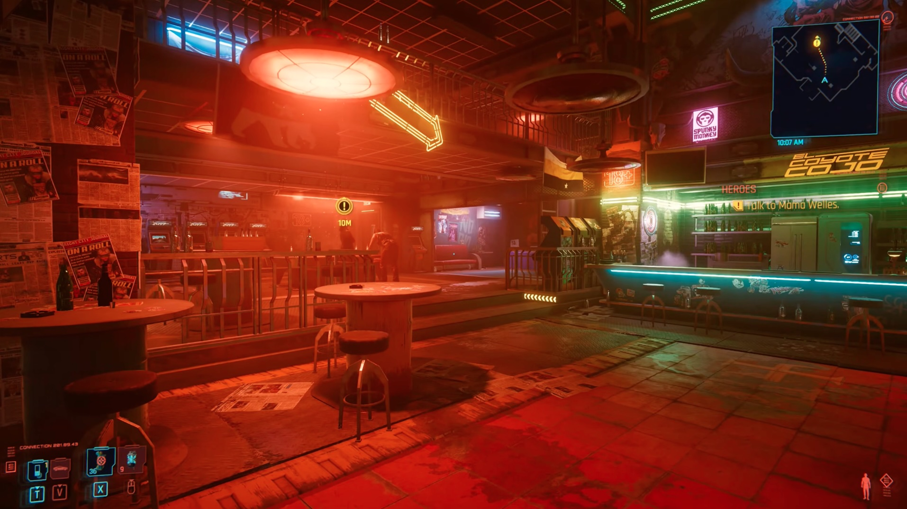
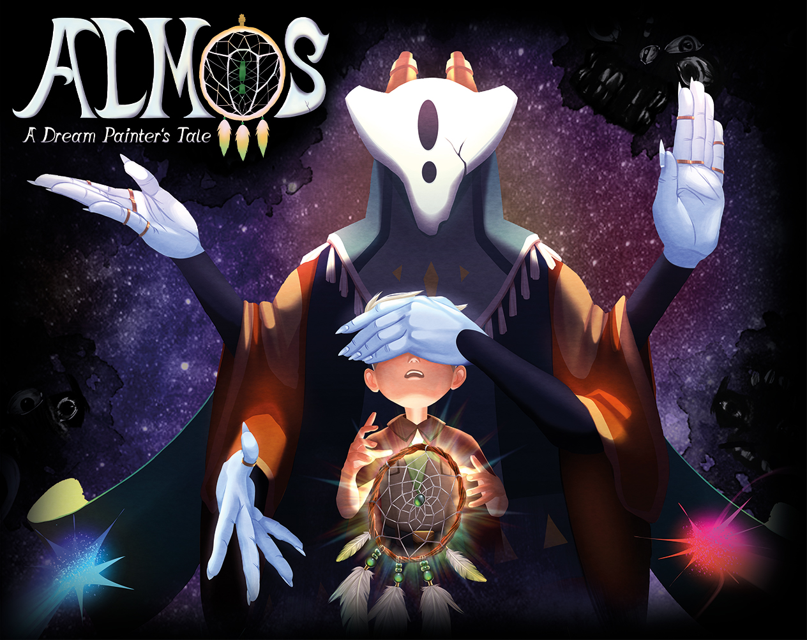

Guild Notice
I design quests players want to finish.
Game Designer focused on Quest & Mission Design, with an emphasis on structure, pacing, player motivation, narrative gameplay and meaningful choice.
Objectives before waypoints.
Guild Notice
Game Designer focused on Quest & Mission Design, with an emphasis on structure, pacing, player motivation, narrative gameplay and meaningful choice.
Portfolio
Quest design studies, professional game design work and selected earlier projects.

Heroes case studyA visual deconstruction of Heroes, including a third branch that turns postponing a decision into a meaningful consequence.
 Student project image
Student project image
Earlier hands-on game projects selected for the design work, prototypes and gameplay material that still support my current portfolio.

Almos project imageMy most recent professional game project, included here as broader game design and production experience rather than quest design work.
Game Designer
Game Designer · Quest & Mission Design
About
Game Designer with professional development experience, currently focused on Quest & Mission Design. I am especially interested in structure, pacing, player motivation, narrative gameplay and meaningful choice.
I like turning narrative intent into clear, playable structure and giving players reasons to care about what they do next.
Selected Projects
Selected earlier projects with useful gameplay, design or prototype material.
 Student Project 01
Student Project 01
Replace this title and description with the strongest older project that has useful video or image material.
 Student Project 02
Student Project 02
Use this slot for another project that demonstrates a different design or development skill.
New Contract Available
No actual raven required.